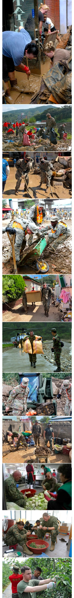

대 민 지 원

대 민 지 원
표정들 보면 아닌거 같은데
왜이리 합성같냐 ㅋㅋㅋㅋㅋ
미국도 대민지원 있나
전세계 모든 국가에 다 있음
ㅇㅇ 허리케인오면 치울 때 미군 대민지원함. 일본 자위대도 마찬가지로 태풍이나 지진나면 대민지원하고.
운영비 대주는 분들께 서비스 해드려야지
스위스 같은 설산있는 지역에선 대민지원으로 산에 대포도 쏨
인공 산사태를 유발시켜서 더 큰 피해를 예방하는거라나
군인이 사실 국가의 모든걸 하지
정부도 세우고 기관도 설립하고 하는데
근데 웃긴게 한국 군이 해외파병 가서 제일 잘하는게 대민지원 ㅋㅋㅋ 그래서 현지 주민들하고 사이가 좋음
그리고 배신하면 엄청난 보복을 하기로 유명하지
무슨 보복함?
파병가서 무조건 대민지원하고
베트남전에서 한국군이 대민지원 엄청 하고 주변 주민들하고 엄청 잘해줌
베트남전 대민지원의
• 긍정적 측면: 탁월한 대민 접촉과 물질적 지원으로 초기 현지 주민들의 호감과 우군화를 이끌어냈다는 평가를 받습니다.
• 비판적 측면: 이러한 민사작전과 심리전의 이면에 베트콩 색출 과정에서 발생한 민간인 학살 등 비극적인 피해에 대한 진상 규명과 책임 문제가 여전히 역사적 과제로 남아 있습니
읭 무슨 배신이지 썰좀 더 풀어봐
점령군이 바뀔 때 마다 지역주민들은 살기 위해 해당 점령군한테 맞춰주는 걸 배신이라고 하는 거 아닐까 싶음
중간까지는 그러려니 했는데 무 다듬는거 존나 ㅋ
막짤 미군애들 표정 진짜.ㅋㅋㅋㅋ
한국은 분쟁지역 취급이라 위험수당도 받으면서 꿀빠는데 저정도는 좀 해줘도 되지 ㅋㅋㅋ
꿀빠는거 아니다..
(Ssibal..)
No ssibal keep going
한국이 이렇게 힘든나라라구 ㅠㅠ
This is Korea
유 워너비 프렌들리 네이버후드? 컴 컴